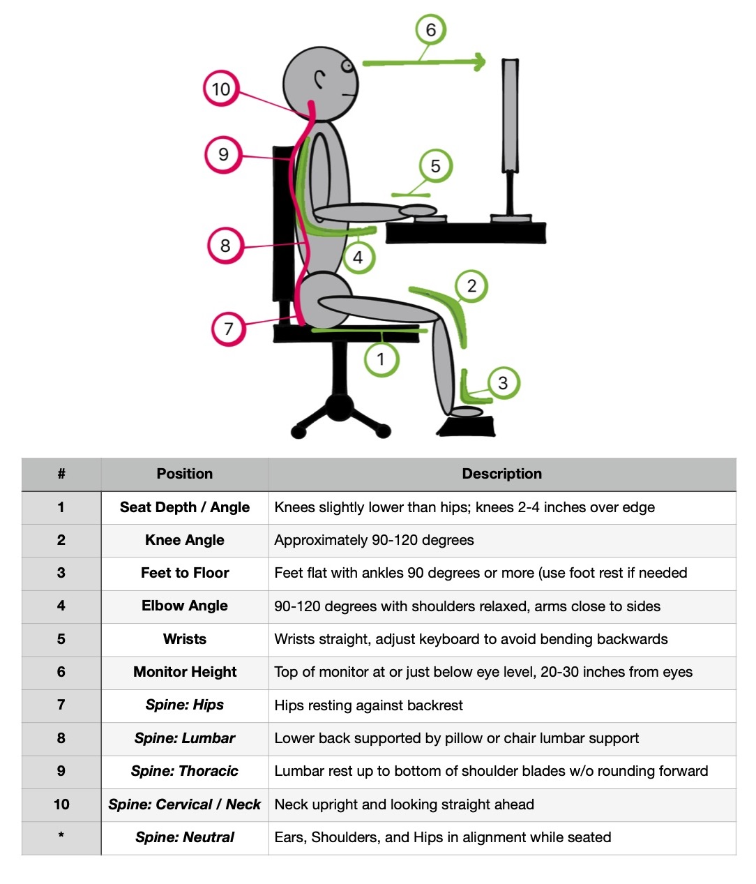
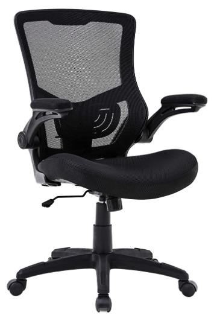
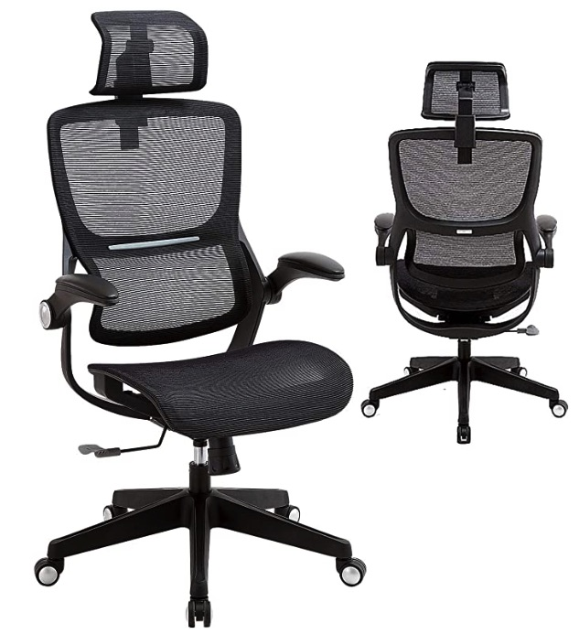
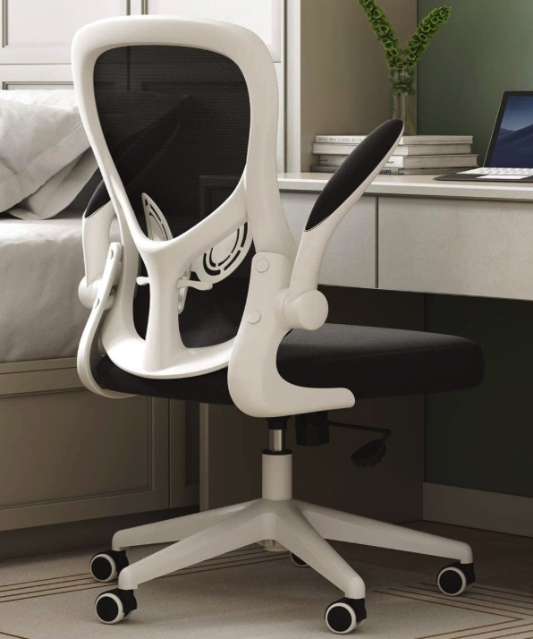
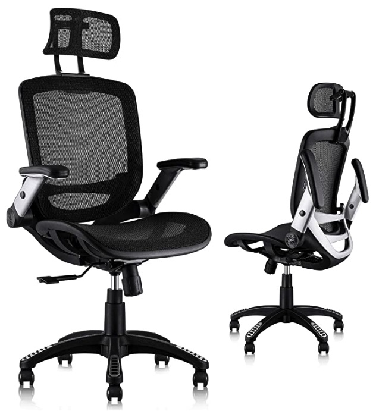

Selecting an office chair can feel a lot like dating. You search and search, maybe give one or two a trial run for a few months each, but you find they just don’t support you the way you deserve. Deep down you believe there is one out there, waiting for you, but your paths never seem to cross. Every chair you’ve given yourself too has failed in one way or another, maybe you could point to a singular flaw, maybe it just didn't feel right in the moment. It’s no wonder this is such a booming business because much like love, office chairs are complicated, confusing, and no one chair will work for everyone. Like any sturdy relationship, selecting and enduring an office chair requires knowledge, patience, and maybe a little compromise. This guide is intended to help you, the reader, better understand the multiple components to selecting the correct office chair and the explanation as to why they are each important to consider - to discover the perfect office chair you have been dreaming about.
Love analogies aside, the absolute, most important feature of a good office chair is its level of adjustability. A key concept in ergonomics is that the more adjustable your equipment is, the more likely you will get it to match your daily needs. There’s a stark difference between your dining room table chair from IKEA and ErgoThrone 5000 (not a real chair… but I’d buy that because clearly, it has every feature imaginable). Obviously, you will soon discover the multiple features a chair can and should offer. Although it is important to consider that these many features are only as relevant as the job for which you use it. A programmer sitting at a desk for 8-10 hours of intense focus will require more custom adjustments than the college student sitting for 1-2 hours at a time for online lectures and studying social media. The reality is, for all people, each day we feel differently and will more than likely need to maneuver our office design accordingly. I don’t mean that in a feng shui sort of way, but rather referencing the musculoskeletal system. It’s not uncommon that wrestling your pillow the previous night can increase the tension through the shoulders, neck, and back. For ideal ergonomics, micro-changes to your daily positioning become important for sustained and healthy work-life balance. Having a chair that can quickly adapt becomes a great asset.
Do you hack away on your keyboard for hours, or saw logs during virtual meetings with your camera turned off? The type of work you do will necessitate the level of need for various areas of chair-adjustability. For brevity, if there are long hours of focused work it’s best to have MORE adjustability as the body becomes dependent on the chair. For passive tasks like meetings, phone calls, and think-tank sessions, it is advised to have adjustable armrests and a reclining back with a neck rest to decrease strain on the spine and neck without compromise to neutral spinal curves. Each aforementioned task is different in its strain on the body and requires varying emphasis for individual pieces of your chair. The type of work that you complete should dictate the required features of your perfect chair.
There are now MANY styles and philosophies regarding office chairs. Anywhere from yoga balls, stools, saddles. For office work, standard office chairs…you guessed it, have the most adjustability in comparison. That being said, I’ll still break down the separate styles of chairs and briefly discuss what they are and why you should or shouldn’t consider them.
A great concept that is quickly overused. Similar to the philosophy behind sit-stand desks, an exercise ball can be a great tool to change up your positioning during the workday. But overuse will quickly fatigue your postural muscles and result in a breakdown in your mechanics. It is a great exercise because it makes you do one long, slow, tedious sit-up the duration you’re on it. Unfortunately, it’s not a sustainable methodology for the average office worker.
I must plead ignorance to a mild extent as I have not personally ever utilized a saddle chair. Although I can offer my professional opinion as a doctor of occupational therapy who specializes in ergonomics. The concept of improved hip alignment is great, but once again, without consistent back support, the posture muscles of the shoulder, neck, and back will fatigue quickly. It looks cool, feels fun, but may not be the correct match for completing long days of work.
I must say, I am intrigued by these contraceptions. As previously, I have not personally tested these chairs out. But also as with saddle chairs, kneeling chairs appear to focus primarily on hip placement with little regard to proximal support. Consistent overuse of this chair may result in the need for a deep tissue massage, which evidently, you may be able to have while seated in this style of chair.
High chairs and stools are often used to work at desks that are too high. They can be great for temporary work to change your position, but will quickly lead to posture muscle fatigue. This leads to slouching, whether conscious or unconscious, and then the anxious need to lean onto the table with your elbows or wrist. Not to mention the lack of sturdy base of support as the average stool is unable to allow feet to touch the ground and are hung up on a bar or rest. These pressure points and unsustainable over-activation of your back and core result in a quick trip to the doctor and probable therapist
This is the gold standard. Continue reading this article to learn why.
Some people sit on the floor, couch, or a plethora of other unsupportive fluff. The moral of the story is 9.9/10 times, they will offer far less support than an office chair and cause significant cumulative strain overtime - unless you happen to be the .01/10.
Before embarking into the many components of a chair, it's good to review the principles that guide ergonomic decision making, mainly being the position you'll do best with while seated in an office chair. For a traditional office chair, the goal should be relative alignment, shown in the image below. The chair is the most efficient tool to smoothly fit your workstation instead of building your workstation around your chair.

Height is the number one component that truly should be adjustable. There are norms for chair height based on your height but they become redundant quickly while referencing your surroundings - mainly your desk (For people who like numbers, I’ve still included a brief chart for comparing height-to-chair). But for example, here are some numbers, “The average office chair should be 16-20 inches tall”. Unless you’re the perfect average human, chances are you’ll need to have some additional adaptability - and that’s just so your feet touch the ground correctly! Now think about your whole workstation. Under the omnipresent theme of “adjustability”, either you and your chair must adjust in space to align with your workstation, or your workstation needs to adjust to you. Needless to say, investing in an adaptable chair is typically less expensive than investing in motorized desks, monitor arms, keyboard trays, etc - but to each their own.
The most common problem that arises is with a chair being paired with an immobile desk. Either the chair is unable to reach the appropriate height to function with the desk or while rising the chair to meet the desk, now the feet have left the ground. The former WILL require either a new chair or desk while the latter may benefit from supplemented use of a footrest so that the feet can resume a sturdy foundation while avoiding pressure points to the back of the legs. This is not a complicated or controversial area, so in summation: make sure your chair can adjust its height easily and extensively.
It’s what you sit on and not often of high regard to selecting a chair because most people live under the philosophy, “it is what it is”. But many times, it is what it shouldn’t be! The base plate not only should be cushioned to protect your hips from pressure sores, but inappropriate width and length can lead to serious compression injuries if it's not fit for you. The edge of the seat pan should be 1 - 4 inches between its end the back of your legs. Consider the mechanics of levers - if the weight of your legs is hanging off of your chair by more than 4-inches, the weight pulls at a greater force over the edge of the seat pan and can quickly cause compression on the back of your thighs. If the distance between is less than 1-inch, then the same compression can be to the back of your upper calves and often make it difficult to quickly get in and out of your chair. If there is too much width, your hips remain unsupported and you lean side-to-side like a tree in the wind.
With advanced office chairs, the seat pan can be adjusted forward and backward to account for differing heights. The width should also allow for at least 1-inch of clearance on both sides of your hips. Different body shapes and sizes may require seated width measurements to ensure proper fit before any purchases are made. Waterfall seats are purposefully curved forward over the edge of the seat pan. They offer increased comfort for the average person by contouring around potential compression sites.
Old school chairs often come with large cushions that can sink you like a 70’s beanbag chair. Modern chairs have more variety and can have memory foam, mesh, and more. The moral of the story is understanding the purpose of weight distribution. Pressure, even pressure through a simultaneously muscular and fatty area - your rump, can decrease blood flow. Fortunately, you aren’t spending days on end in your chair, no matter how much you love it and feel as if it “just gets you”. Nonetheless, a few hours at a time on a flat, hard surface can decrease the blood flow, causing mild pressure marks. Seems pretty mild BUT if this happens repeatedly and daily, blood flow begins to shift and prioritize areas that the body deems problematic, shunting blood flow away for other important areas such as nerves and muscles. A beautiful thing the body does is when it detects these cascading issues, it warns you by making your tuchis feel uncomfortable. Don’t let your chair be a pain in the ass and stay away from non-cushioned, flat, kitchen chairs. Find a chair that feels good for you or add a cushion to the chair you already have to avoid sustained pressure from poor dynamic weight distribution.
Tilt is an elective feature that can be helpful for the dynamic worker which frequently works in a reclined position. The tilt allows the base plate to lift slightly forward or back during changing tasks. This video does a fantastic job explaining and visually the variations in tilt features.
This is essentially the suggestion that your feet should be flat on the ground without compromising your leg position. This is primarily related to the height of the chair and is important to safely catch the weight of your legs hanging off of the base plate. Occasionally, if your desk is tall then your chair has to be raised to allow a functional reach to the desk. Often, the feet will by-necessity leave the floor and then you may need a footrest to maintain healthy contact. It can be as simple as a sturdy box or formal adjustable footrest.
Another concept within the “base-of support” discussion is related to the base of the chair itself. There is some debate and strangely some strong opinions on the importance of various differences and benefits of how many legs the chair has, the presence of wheels/casters, etc. It’s honestly not that complicated. The chair should be able to stand upright when you’re using it - as most chairs are designed to do. AND, if you want to be mobile, make sure it has wheels and make sure you have flooring that can tolerate them (tall carpet sometimes gets stuck in the wheel casings…). But that’s about it. That’s controversy solved in a paragraph.
If there’s a bowl of candy in front of you, will you eat the whole thing? Temptation can be a funny thing and too much of a good thing can be a bad one. Armrests can be a bowl of candy or an asset turned enemy. Armrests should exist to provide gentle support while at rest or taking breaks from computer work. It’s way too common to dive into the bowl of candy and rest your body weight through the armrests during long periods of work. If they are over-utilized, they can be an insidious compression site that can quickly lead to work-related musculoskeletal disorders like tendonitis and cubital tunnel syndrome. It’s my personal opinion that temptation should be avoided and armrests shouldn’t be emphasized unless you spend much of your day reclined in meetings, on calls, or previewing content.
If you decide to still use armrests or your dream chair naturally comes with them, I won’t hold it against you. It does, however, become essential that you position them at the right level. Static armrests that cant raise/lower/swivel frequently destroy the ability to use a static desk without having to make modifications like an attachable keyboard tray. The armrests can bump into the table and disable your arms reach to the keyboard, forcing your arms to unnaturally extend forward or move your spine away from the supportive chair back. Armrests, if used, should rest less than 1 inch below your elbows when you’re seated upright in your chair with your shoulders relaxed. If you spend time reclining in your chair, those armrests will need to adjust accordingly your position in the chair shifts.
The love of your life should have your back! Yeah...that’s the worst pun yet. But a chair’s back support is the most vital component to preventing postural breakdown while simultaneously being one of the most fickle. A chair designed with back support for the average person commonly works inconsistently. Once again, maybe you’ve guessed it - adjustability is key. There are many chairs designed with lumbar support that can be adjusted for the height and depth, with a price increase attached to it. Before diving into the specifics, let’s discuss why the back and neck position is important.
The spine is your central column. Between the vertebra are cartilage discs that help cushion the bones during prolonged static durations (And while using trampolines…but that’s a different discussion). The spine itself, running from the base of the skull to your pelvis, has natural curves that should be maintained to utilize the cushioning from those discs. Secondarily, the muscles running on the front and back of the spine work diligently to keep the torso upright. Any muscle without a break will fatigue and work much less efficiently. This is exactly what happens without proper back support. As your muscles fatigue over of 1-2 hours of work, you begin to slouch or lean your body weight one way or another (If you have armrests, you’ll probably drop high levels of weight on them through your elbow). As you slump, other muscles activate in unnatural positions and can become strained, the discs collapse to the pressures and angles they aren’t accustomed to taking. And the supervillain origin story begins… Appropriate back support nullifies this process and keeps the villains at bay.
All “lumbar support" really means is lightly using a cushion or the design of the chair to support the lower back and maintain the natural curve - basically the other side from your belly button and up to the bottom of your shoulder blades. Too much support can greatly tighten your hips and round your shoulder whole too little can cause a flat back - both of which are problematic postures.
Some chairs also utilize a headrest and provide “cervical support”. This is another area where the natural curve of the spine can become compromised. A headrest is not needed for most office tasks but is sometimes utilized for gamers and programmers. A common position the neck creeps into is called protraction. This means the chin drifts forward over the chest and increases the tension on the front of the neck and chest. Sometimes having a headrest gives good biofeedback.
Many chairs can recline. If you have or want a chair that can recline, make sure it also can lock. Reclining chairs are dangerous. They feel incredibly comfortable while testing in the showroom but the moment you sit and work for 20-minutes and those posture muscles fatigue, you lean deeply into the chair only to find that now you’re 2 feet further from your monitor. You think to yourself, “Golly, I’ll just sit upright on my own.” Then this conclusion has you avoid the use of the back of the chair at all and at that point, you might as well just use a stool. Shockingly, many chairs that recline do not lock OR they only lock too far into a reclined position. Be sure to inspect the locking mechanism so you can have the best of both worlds - solid, sturdy, upright posture for computer work, AND reclined bliss during video meetings and phone calls.
All-in-all, the back of the chair should be comfortable. It should promote a sustainable position and have only the adjustability that is relevant to the type of work demands you have throughout your workday. If your current chair is great in all its ways, but lacks sufficient support, check out the many cushion variations that attach most chairs to supplement the need to invest in something new altogether.
WOW! That was a long article. I’m impressed if you made it to the end. You must really be on the search for love and hopefully you find it. This article is loaded with info and ambiguities because the reality is no one chair will work for everyone. I hope that the reader at least has an idea of the various components and considerations to make your own informed decisions. As School House Rock says, “Knowledge is Power!”
If you’re purchasing online, then you would be then likely benefit from having as many of the aforementioned adjustable components as possible. This simply helps to ensure that your mail-order husband/bride will at least become who you think they should be. If you can go to the showroom locally, date, shop around, and have a fun time at the big dance. As an office worker, take your time and select the chair that feels the best, is the most adaptable, and is compliant with all your various needs of the complicated days, weeks, and months of 2020 and beyond.
This is a good, well-cushioned office chair. Although simple, offers the many adjustable components needed like flip-up armrests, adjustable lumbar support, and is height adjustable. It has a lockable rocking back to allow for rest periods during work.
$173.99
Click to find on Amazon.com
This is a fully adjustable chair with a headrest and mesh seat. The mesh seat is a different style compared to cushioning which usually comes down to personal preference. A notable aspect of this chair is that it is smaller and compact and may be best utilized by a slimmer individual with a seat width of 19.3”.
$249.00
Click to find on Amazon.com
This chair looks like it’s from space which is the hallmark of a good chair. It maintains the important adjustability features with the added ability to shift the lumbar support. It utilizes a flat memory foam cushion without the waterfall design which works well for larger individuals as long as the lumbar support is well utilized.
$159.99
Click to find on Amazon.com
The Gabrylly chair is eerily similar to the SAMOFU chair previously discussed. The notable difference is the armrests being hight adjustable so they are actually used as intended - for resting but not cramming the weight of your arms into it throughout the day. It’s also slightly wider and taller with more height adjustability.
$289.50
Click to find on Amazon.com
